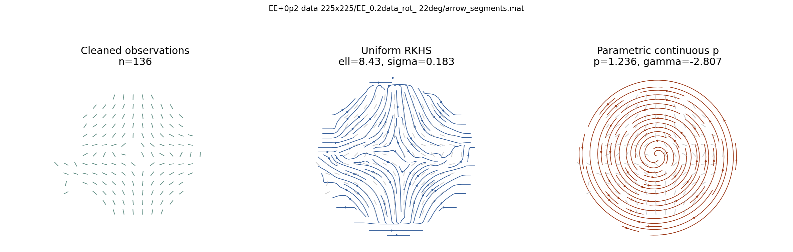
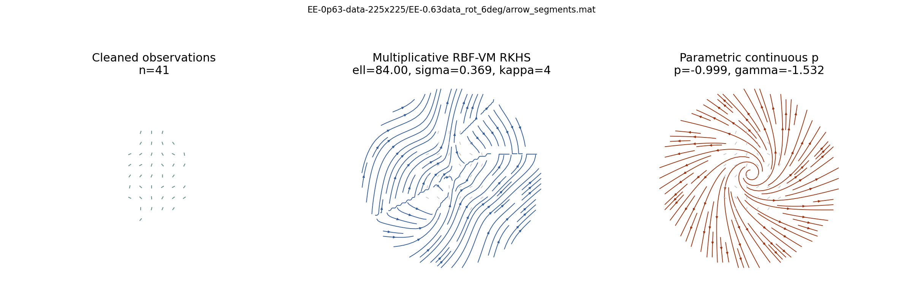
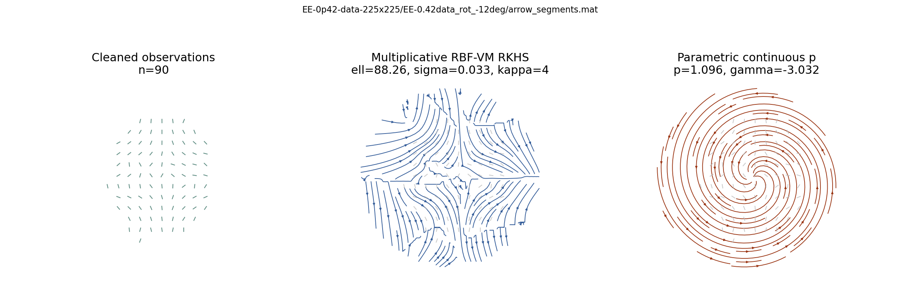
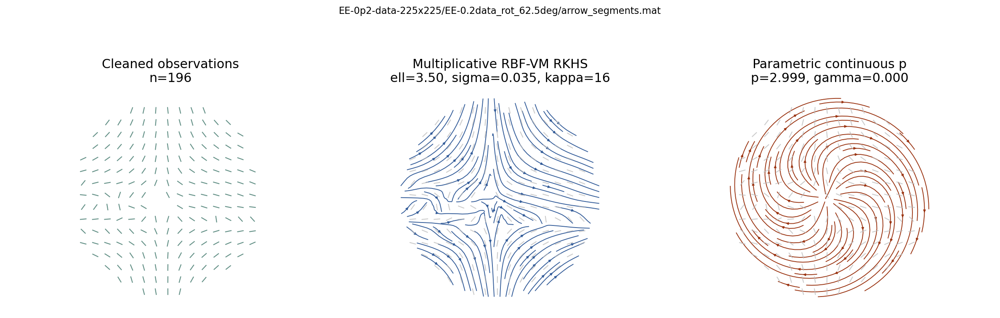

EE+0p2-data-225x225/EE_0.2data_rot_-22deg/arrow_segments.mat
Kernel: Uniform RKHS (ell=8.43, sigma=0.183). Parametric: Parametric continuous p (p=1.236).
Each example shows the cleaned central-ROI observations, the best held-out-RSS kernel fit, and the best full-data parametric spiral fit.

Kernel: Uniform RKHS (ell=8.43, sigma=0.183). Parametric: Parametric continuous p (p=1.236).

Kernel: Multiplicative RBF-VM RKHS (ell=84.00, sigma=0.369). Parametric: Parametric continuous p (p=-0.999).

Kernel: Multiplicative RBF-VM RKHS (ell=88.26, sigma=0.033). Parametric: Parametric continuous p (p=1.096).

Kernel: Multiplicative RBF-VM RKHS (ell=3.50, sigma=0.035). Parametric: Parametric continuous p (p=2.999).